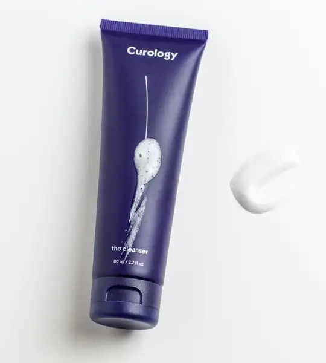

Cuidados com a pele
Organize os temas que deseja conhecer na avaliação.
Selecione um tema para explorar as fichas.

Organize os temas que deseja conhecer na avaliação.
Uma ficha para preparar suas perguntas e preferências.
Saiba o que registrar entre uma visita e outra.